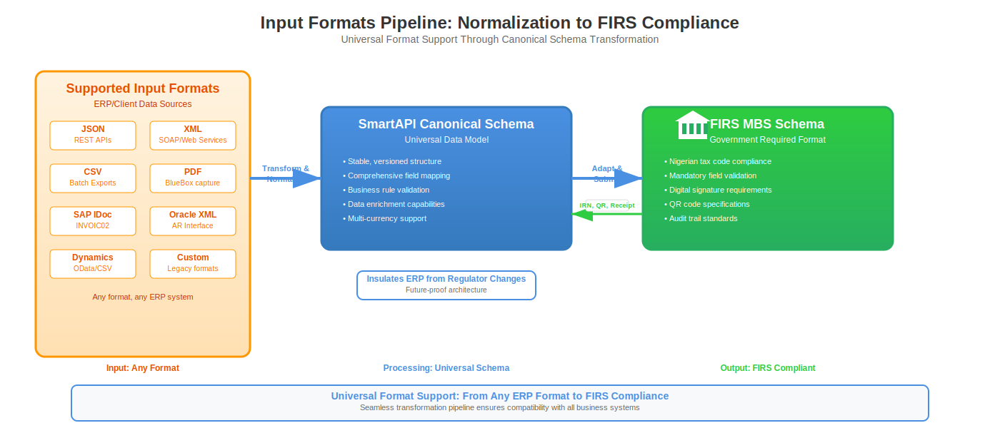
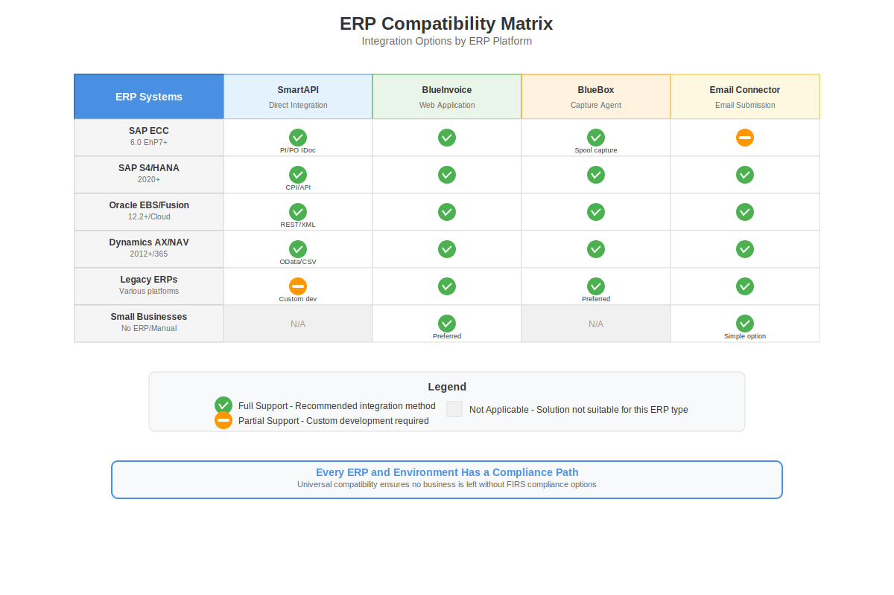
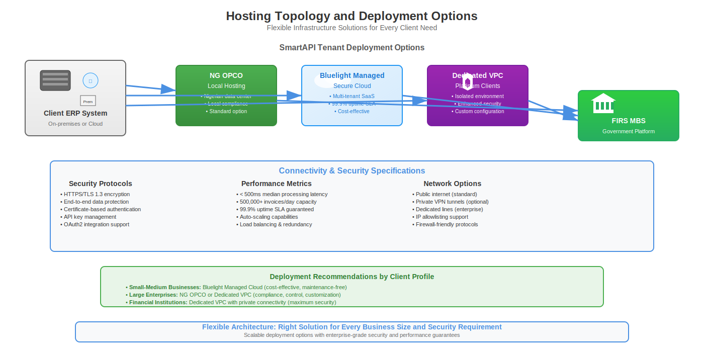
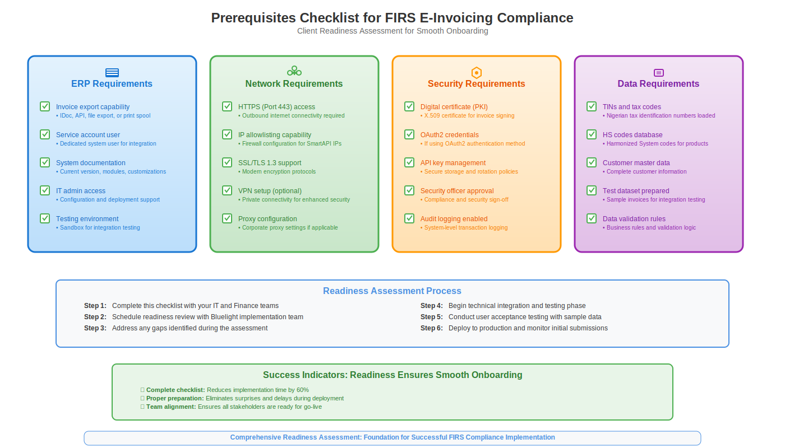

4.1 Supported Integration Endpoints and Formats
Our platform is designed to integrate with a wide range of enterprise systems, from Tier-1 ERPs to homegrown billing solutions. All methods converge on <BluelightSmartAPI>, which provides a canonical compliance layer.
Supported Input Formats
- Structured Data: JSON, XML, CSV
- ERP Documents: SAP IDoc INVOIC02, Oracle EBS XML, Microsoft Dynamics export formats
- Unstructured Documents: PDF (via BlueBox or Email Connector parsing)
- Hybrid: Mixed batch files, compressed packages (ZIP), or direct email attachments
Output to FIRS
- Fully aligned with FIRS MBS schema, including all mandatory fields, signatures, and QR payloads.
- Submission over HTTPS with TLS 1.3, with fallback retry mechanisms for FIRS outages.
Input formats from ERP → SmartAPI canonical → FIRS MBS

4.2 ERP and Billing System Compatibility
SAP
- ECC 6.0 (IDoc INVOIC02 via PI/PO)
- S4/HANA (Integration Suite CPI iFlows via Billing Document API)
- Compatibility tested in hybrid dual-stack environments (ECC for Finance, S4 for Logistics)
Oracle
- E-Business Suite (XML/flat file adapters)
- Fusion Applications via REST and SOAP APIs
Microsoft Dynamics
- AX and NAV via batch exports
- Dynamics 365 Finance & Operations via OData/REST
Others
- Sage, QuickBooks, Tally, or custom systems via JSON REST, CSV, SFTP, or BlueBox capture at print/file level
Legacy Environments
- BlueBox ensures compliance without upgrades or invasive modifications. It intercepts print jobs or folder drops and transforms them automatically.
Compatibility matrix ERP vs SmartAPI vs BlueInvoice vs BlueBox

4.3 Network and Hosting Considerations
Connectivity Options
- Direct HTTPS over internet with mTLS (client certificates)
- VPN tunnel into SmartAPI endpoints
- Dedicated leased line or private interconnect (for Tier-1 clients with higher security policies)
Hosting and Residency
- Default hosting within NG OPCO server when mandated
- Option for Bluelight-managed secure cloud tenancy (AWS, Azure, GCP) with region lock to Nigeria
- Dedicated VPC (Virtual Private Cloud) available for Platinum tier clients
Latency and Throughput
- Median submission latency: < 500 ms inside SmartAPI
- P95 latency: < 1.5s excluding FIRS response time
- Scale tested for > 500,000 invoices per day per tenant
Hosting topology – client ERP on-prem/cloud → SmartAPI tenancy → FIRS MBS

4.4 Customer Prerequisites and System Readiness
Minimum Client Requirements
- Active ERP or billing system with export capability (file, API, print, or email)
- Network connectivity to SmartAPI endpoints (whitelisted IPs, open ports 443)
- Valid digital certificate or key pair (client-provided PKI or Bluelight-issued PKI)
- Service account for integration (SAP RFC user, Oracle integration user, etc.)
- Test data set with valid TINs, HS codes, and tax codes for SIT and UAT
Optional Enhancements
- SAP CPI tenant for future S4/HANA migrations
- SIEM integration for security teams
- SFTP server access for batch fallback scenarios
Prerequisites checklist mapped to ERP, Network, Security, and Data readiness

4.5 Integration Options by Client Profile
| Client Profile | Recommended Integration Path | Notes |
|---|---|---|
| Large enterprise on SAP ECC | SmartAPI via PI/PO with IDoc INVOIC02 | Future-safe, minimal ECC disruption |
| Large enterprise on SAP S4 | SmartAPI via CPI iFlows with Billing Document API | Migration ready, native API support |
| Oracle EBS or Fusion | SmartAPI via XML/REST adapter | Direct mapping, proven flows |
| Dynamics AX/NAV | SmartAPI via OData or batch CSV | Mid-market ERP compatibility |
| Legacy ERP with no APIs | BlueBox capture at print or file output | Zero system modification required |
| Small business unit / standalone | BlueInvoice SaaS or Email Connector | Fastest path to compliance |
4.6 Why This Matters to IT Leaders
Where competitors might tell clients "we support SAP," we demonstrate in detail exactly how the integration occurs, what formats are accepted, what hosting constraints apply, and what prerequisites the client must meet. This eliminates hidden costs, reduces risk, and allows CIOs and CTOs to sign off with confidence.
<500ms
Median API Response
500K+
Daily Invoice Capacity
99.9%
Platform Availability
Ready for Technical Assessment?
Let our technical architects evaluate your current ERP landscape and design the optimal integration pathway for your FIRS compliance requirements.